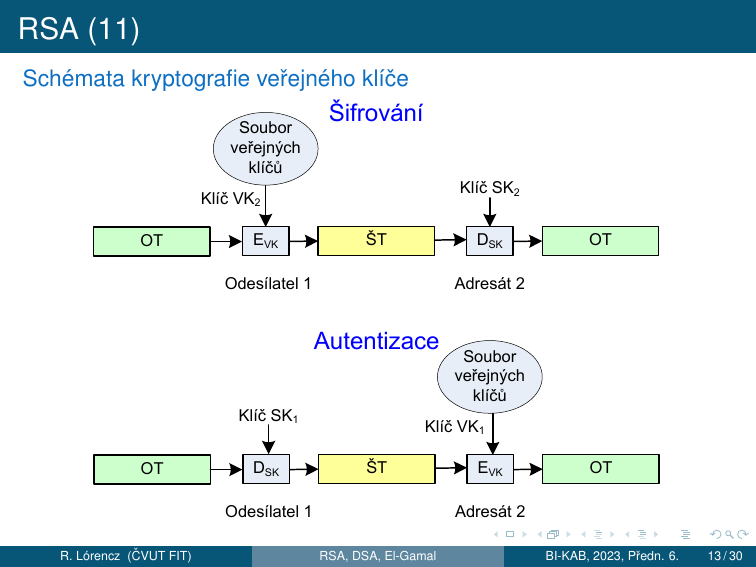
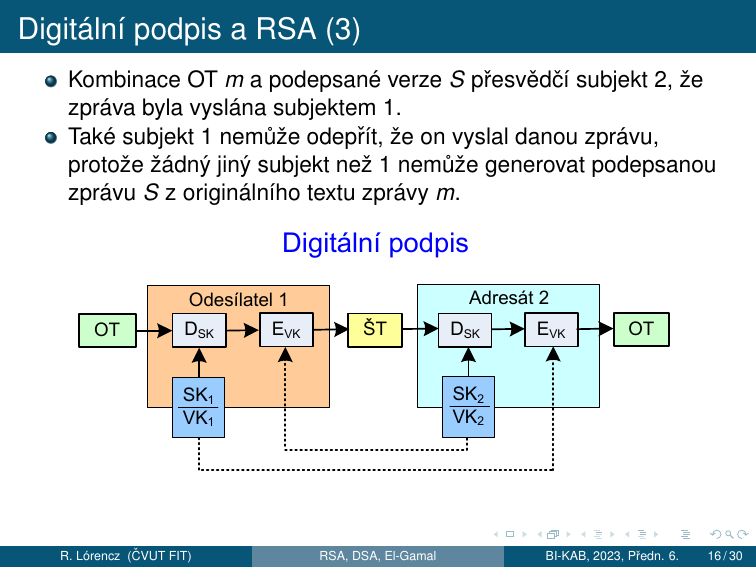
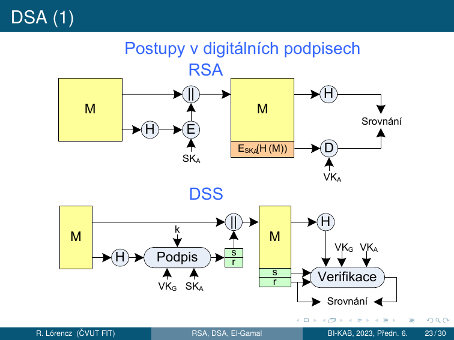

5. Asymetrická kryptografie¶
Cíle kapitoly
- Porozumět principu asymetrické kryptografie (dvojice klíčů)
- Zvládnout Diffie-Hellman výměnu klíčů a DLP
- Umět ručně projít RSA šifrování, dešifrování a podpis
- Pochopit RSA-CRT, ElGamal a DSA
- Znát běžné útoky a bezpečnostní požadavky
5.0 Exponenciální šifra¶
Symetrická šifra na modulárním umocňování
Exponenciální šifry jsou symetrické – používají stejný klíč pro šifrování i dešifrování. Byly uvedeny v roce 1978 Pohligem a Hellmanem. Jsou značně odolné vůči kryptoanalýze.
Parametry¶
- \(m\) je prvočíslo
- \(e\) je přirozené číslo – šifrovací klíč, platí \(\gcd(e, m-1) = 1\)
- OT je nejdříve převeden do dvojciferného číselného ekvivalentu (A=00, B=01, ..., Z=25)
Bloky a šifrování¶
Získaná čísla seskupíme do dekadických číslic délky \(2s\) tvořících číslo, kde \(s\) je počet písmen v jednom bloku. Tyto bloky tvoří čísla menší než \(m\). Kdy \(2525 < m < 252525\), potom \(s = 2\) (bloky po dvou písmenech = 4-ciferná čísla).
Každý blok \(p\) s \(s\) písmeny OT, reprezentující celé číslo s \(2s\) dekadickými číslicemi, je převeden na blok \(c\) ŠT vztahem:
Příklad šifrování: \(m = 2633\), \(e = 29\)¶
\(\gcd(29, 2632) = 1\) ✓
OT: THIS IS AN EXAMPLE OF AN EXPONENTIATION CIPHER
Číselné ekvivalenty (4-ciferné bloky po 2 písmenech):
(Na konec přidáno X = 23 kvůli zarovnání.) Příklad prvního bloku: \(c = |1907^{29}|_{2633} = 2199\)
ŠT: 2199 1745 1745 1209 2437 2425 1729 1619 0935 0960 1072 1541 1721 1553 0735 2064 1351 1741 1741 1459
Dešifrování¶
K dešifrování bloku \(c\) ŠT potřebujeme dešifrovací klíč \(d\):
Dešifrovací vztah — odvozen pomocí malé Fermatovy věty (\(p^{m-1} \equiv 1 \pmod{m}\)):
Příklad dešifrování: \(m = 2633\), \(e = 29\)
\(d = |29^{-1}|_{2632} = 2269\) (výpočet EEA)
Dešifrování bloku 2199: \(p = |2199^{2269}|_{2633} = 1907\) ✓
Časová složitost¶
- Šifrování každého bloku: \(O(k^3)\) bitových operací algoritmem Square & Multiply (\(k = \lceil \log_2 m \rceil\) bitů)
- Nalezení \(d\) pomocí EEA: \(O(\log 2k)\) bitových operací — provede se jednou
- Kryptoanalýza: vyžaduje řešení problému diskrétního logaritmu (viz sekce 5.3) — v obecném případě nemůže být vykonána v přijatelné době
5.1 Matematické základy¶
Modulární aritmetika — klíčové fakty¶
Eulerova funkce:
Rozšířený Euklidův algoritmus (výpočet inverzního prvku)¶
Pro výpočet \(a^{-1} \bmod m\) (existuje pokud \(\gcd(a,m) = 1\)):
Příklad: \(5^{-1} \bmod 26\)
Euklidův algoritmus: \(26 = 5 \cdot 5 + 1\)
\(1 = 26 - 5 \cdot 5\)
\(\Rightarrow 1 \equiv -5 \cdot 5 \pmod{26} \Rightarrow 5^{-1} \equiv -5 \equiv 21 \pmod{26}\)
Ověření: \(5 \cdot 21 = 105 = 4 \cdot 26 + 1\) ✓
5.2 Diffie-Hellman výměna klíčů¶
Protokol¶
Veřejné parametry: prvočíslo \(p\), generátor \(g\) (primitivní kořen mod \(p\))
| Krok | Alice | Bob |
|---|---|---|
| Generuje tajné | \(a \leftarrow \{1, \ldots, p-2\}\) | \(b \leftarrow \{1, \ldots, p-2\}\) |
| Počítá veřejné | \(A = g^a \bmod p\) | \(B = g^b \bmod p\) |
| Pošle | \(A \to\) Bob | \(B \to\) Alice |
| Sdílený klíč | \(K = B^a \bmod p\) | \(K = A^b \bmod p\) |
| Shodnost | \(K = g^{ab} \bmod p\) | \(K = g^{ab} \bmod p\) ✓ |
Bezpečnost — Diskrétní logaritmus (DLP)¶
Útočník zná \(p, g, A = g^a \bmod p\) a chce najít \(a\). To je Discrete Logarithm Problem (DLP) — v obecné grupě není znám polynomiální algoritmus.
Diffie-Hellman není odolný vůči MITM!
Útok Man-in-the-Middle: Eve se vloží mezi Alici a Boba, každému nabídne svůj klíč. DH samotný neověřuje identitu — potřebujeme autentizaci (certifikáty, STS protokol).
Diffie-Hellmanův protokol — formální popis¶
Jedná se o aplikaci exponenciální šifry pro zřízení společného klíče. Exponenciální šifra je vhodná pro zřízení společného klíče pro dva nebo více subjektů.
- Volba veřejných prvků účastníkem A: prvočíslo \(m\) a celé číslo \(a\) (\(a\) je generátor grupy \(\mathbb{Z}_m^*\))
- Generování parametrů klíče účastníkem A: volba čísla \(k_1 < m-1\) a výpočet \(y_1 = |a^{k_1}|_m\); A odešle prostřednictvím komunikačního kanálu B čísla \(a\), \(m\) a \(y_1\)
- Generování parametrů klíče účastníkem B: volba čísla \(k_2 < m-1\) a výpočet \(y_2 = |a^{k_2}|_m\); B odešle prostřednictvím komunikačního kanálu A číslo \(y_2\)
- Dopočítání sdíleného klíče účastníkem A: \(K = |y_2^{k_1}|_m\)
- Dopočítání sdíleného klíče účastníkem B: \(K = |y_1^{k_2}|_m\)
Shodnost: \(K = |a^{k_1 k_2}|_m\) pro oba účastníky. Neautorizované subjekty nemohou najít \(K\) v rozumném čase — jsou nuceny hledat logaritmus modulo \(m\).
Příklad: \(m = 13\), \(a = 2\), \(k_1 = 7\), \(k_2 = 11\)
- A pošle B: \(y_1 = |2^7|_{13} = 11\)
- B pošle A: \(y_2 = |2^{11}|_{13} = 7\)
- A vypočítá: \(K = |7^7|_{13} = 6\)
- B vypočítá: \(K = |11^{11}|_{13} = 6\) ✓
Rozšíření pro \(n\) subjektů¶
V případě \(n\) subjektů má každý vlastní klíč \(k_1, k_2, \ldots, k_n\). Společný klíč:
Zkouška
Provést DH na malých číslech ručně. Vysvětlit, proč útočník nemůže spočítat sdílený klíč. Znát formální kroky protokolu.
5.3 Problém diskrétního logaritmu (DLP)¶
Motivace¶
Při práci s reálnými čísly není výpočet mocniny výrazně jednodušší než výpočet logaritmu. Jiná situace nastává v konečné grupě, např. \(\mathbb{Z}_n^*\) (s operací násobení modulo \(n\)), která obsahuje prvky nesoudělné s \(n\). S použitím metody „Square & Multiply" je výpočet mocniny v konečné grupě rychlý.
Ale když máme prvek \(m \in \mathbb{Z}_n^*\), o kterém víme, že je ve tvaru \(b^k\), kde \(b \in \mathbb{Z}_n^*\) je známý prvek, tak neznáme rychlý algoritmus na nalezení hodnoty \(k = \log_b m\).
Definice¶
Nechť \(G\) je grupa, \(b \in G\) a \(y \in G\) je mocninou prvku \(b\). Potom diskrétní logaritmus prvku \(y\) o základu \(b\) je každé číslo \(k\) takové, že \(b^k = y\), značíme ho \(\log_b y\).
Pro libovolné prvky \(g, h \in G\) nemusí vždy existovat číslo \(k\) takové, že \(g^k = h\). Např. v grupě \(\mathbb{Z}_{11}^*\) neexistuje číslo \(k\) takové, že \(5^k = 7\) (tj. v \(\mathbb{Z}_{11}^*\) neexistuje \(\log_5 7\)). Avšak když je grupa \(G\) cyklická a prvek \(b \in G\) bude jejím generátorem, tak existence \(\log_b m\) je garantována pro všechna \(m \in G\).
Vlastnosti diskrétního logaritmu¶
Mějme cyklickou grupu \(G\) řádu \(n\) a nechť \(g\) je její generátor. Pak platí:
- \(\log_g 1 = 0\), \(\log_g g^k = k\) pro \(k \in \mathbb{N}\)
- \(\log_g a^k = k \cdot \log_g a\) pro všechna \(a \in G\), \(k \in \mathbb{N}\)
- \(\log_g(a \cdot b) = \log_g a + \log_g b\) pro všechna \(a, b \in G\)
Příklady
- Cyklická grupa \(\mathbb{Z}_{17}^*\) s operací násobení modulo 17, generátor \(g = 3\):
\(\log_3 7 = 11\), protože \(3^{11} \equiv 7 \pmod{17}\)
- Cyklická grupa \(\mathbb{Z}_{17}\) s operací sčítání modulo 17, generátor \(g = 3\):
\(\log_3 7 = 8\), protože \(3 \cdot 8 \equiv 7 \pmod{17}\)
V 1. případě (\(\mathbb{Z}_p^*\)) neexistuje rychlý algoritmus. Ve 2. případě (\(\mathbb{Z}_p\)) lze PDL vyřešit pomocí Euklidova algoritmu v polynomiálním čase.
Výpočetní obtížnost¶
Nejrychlejší algoritmy pro výpočet diskrétního logaritmu v \(\mathbb{Z}_p^*\) potřebují přibližně \(\exp(\sqrt{\log m \cdot \log \log m})\) bitových operací — přibližně stejně jako nejrychlejší algoritmy pro faktorizaci.
Útok hrubou silou: Postupný výpočet \(g, g^2, g^3, \ldots\) až do \(g^k = y\). V nejhorším případě \(n\) operací → složitost \(\mathcal{O}(2^d) = \mathcal{O}(n)\), kde \(d = \log_2 n\).
Efektivnější algoritmy (všechny stále exponenciální):
- Baby-step giant-step
- Pollardův \(\rho\) algoritmus
- Pohlig-Hellmanův algoritmus
- Index kalkulus
- Funkční síto (momentálně nejrychlejší)
Délka klíče a bezpečnostní kategorie¶
| hacker | firma | taj. služba | lidé | ??? | |
|---|---|---|---|---|---|
| # µPC | 1 | 10³ | 10⁵ | 10⁸ | 10⁵¹ |
| # testů/s | 10⁴ | 10⁶ | 10⁹ | 10¹² | 10¹⁹ |
| čas [s] | 1 týden | 1 měsíc | 1 rok | 100 let | 1000 let |
| # operací | 10¹⁰ | 10¹⁶ | 10²² | 10³⁰ | 10⁸¹ |
| \(n\) (bitů) | 34 | 54 | 73 | 100 | 269 |
Pro praktické použití: doporučená délka modulárního prvočísla pro \(\mathbb{Z}_p^*\) je \(p \approx 2^{4096}\).
Slabé instance a silná prvočísla¶
Slabá instance
Když \(m\) je prvočíslo a \(m - 1\) je součinem malých prvočísel (slabá instance) ⇒ lze použít speciálních metod pro nalezení logaritmu modulo \(m\) s menším počtem binárních operací než \(O(\log_2^2 m)\).
Silné prvočíslo
Jako modula pro exponenciální šifrovací systémy je vhodné používat čísla \(m = 2q + 1\), kde \(q\) je prvočíslo.
Využití DLP v kryptografii¶
- Diffie-Hellman: útočník zná \(g^a\) a \(g^b\), ale nemůže rychle spočítat \(g^{ab}\) bez znalosti \(a\) nebo \(b\)
- ElGamal šifrování i podpis
- ECDSA (Elliptic Curve Digital Signature Algorithm)
- Bezpečnost závisí na zvolené grupě — běžnou volbou jsou cyklické grupy \(\mathbb{Z}_p^*\) pro dostatečně velká prvočísla
5.4 RSA¶
Úvod — Šifrovací systém s veřejným klíčem¶
Problém distribuce klíčů v síti: Zabezpečení utajené komunikace v síti ⇒ každá komunikující dvojice musí používat šifrovací klíč. U symetrické šifry pokud je šifrovací klíč známý ⇒ dešifrovací klíč lze generovat s použitím malého počtu operací.
Šifrovací systém veřejného klíče (VK) je řešením tohoto problému:
- Používá veřejný klíč \(VK\) pro šifrování a soukromý klíč \(SK\) pro dešifrování.
- Vypočítat \(SK\) při znalosti \(VK\) je výpočetně neschodné.
- Použitím \(VK_A\) kdokoliv může poslat Alici zprávu zašifrovanou \(VK_A\), ale POUZE Alice umí zprávu dešifrovat, protože jen ona zná \(SK_A\).
- Každý subjekt má svůj vlastní \(VK\) a \(SK\). Seznam klíčů \(VK_1, VK_2, \ldots, VK_n\) je veřejný.
Princip RSA šifrovacího systému:
- Uveden Rivestem, Shamirem a Adlemanem v roce 1970.
- RSA je šifrovací systém VK a je založený na modulárním umocňování.
- Dvojice \((e, n)\) je \(VK\) klíče; \(e\) — exponent a \(n\) — modul.
- \(n\) → součin dvou prvočísel \(p\) a \(q\), tj. \(n = pq\) a \(\gcd(e, \Phi(n)) = 1\).

Definice RSA a generování klíčů¶
Definice RSA
- Nechť \(p\) a \(q\) jsou prvočísla.
- Vypočítáme \(n = pq\), \(\Phi(n) = (p-1)(q-1)\).
- Zvolíme \(e\), \(1 < e < n\), \(\gcd(e, \Phi(n)) = 1\) a spočítáme \(d = |e^{-1}|_{\Phi(n)}\).
- Dvojici \(VK = (n, e)\) prohlásíme za veřejný klíč (a zveřejníme), dvojici \(SK = (n, d)\) prohlásíme za soukromý klíč.
Postup pro generování \(VK\) a \(SK\):
- Každý subjekt si náhodně vybere 2 velká náhodná lichá čísla \(p\) a \(q\) se 340 dekadickými číslicemi. Pravděpodobnost prvočíselnosti: \(\approx 2 / \log(10^{340})\), průměrně \(\approx 400\) testů.
- Ke zjištění prvočíselnosti: Rabinův-Millerův pravděpodobnostní test pro 100 „svědků". Pravděpodobnost složeného čísla: \(\approx 10^{-60}\). Každý subjekt provádí výpočet pouze dvakrát.
- Doporučení: zvolit \(e\) jako nějaké prvočíslo \(> p\) a \(q\).
- Podmínka \(2^e > n\) zaručuje, že každý blok OT \(m\) je správně zašifrován (nelze dešifrovat pouhým odmocňováním bez modulární redukce).
Šifrování a dešifrování¶
Formální důkaz dešifrování (pomocí Eulerovy věty):
kde \(ed = k\Phi(n) + 1\) pro nějaké celé číslo \(k\) a z Eulerovy věty \(|p^{\Phi(n)}|_n = 1\) pro \(\gcd(p, n) = 1\).
Příklad RSA — šifrování textu
Parametry: \(p = 43\), \(q = 59\) ⇒ \(n = 2537\), \(e = 13\), \(\gcd(13, 42 \cdot 58) = 1\) ✓, \(\Phi(2537) = 42 \cdot 58 = 2436\)
OT: PUBLIC KEY CRYPTOGRAPHY (X = 23 je výplň/padding)
Bloky OT (4-ciferné, tj. \(s=2\) písmena, protože \(2525 < 2537 < 252525\)):
Šifrování prvního bloku: \(c = |1520^{13}|_{2537} = 95\)
Všechny bloky ŠT:
Dešifrování: \(d = |13^{-1}|_{2436} = 937\) (Euklidův algoritmus). Dešifrování: \(m = |c^{937}|_{2537}\)
Ověření: \(|c^{937}|_{2537} = |(m^{13})^{937}|_{2537} = |m \cdot (m^{2436})^5|_{2537} = m\) ✓
Digitální podpis RSA¶
Šifrovací systém RSA lze použít pro vysílání podepsané zprávy. Při použití podpisu se příjemce zprávy může ujistit, že zpráva přišla od oprávněného odesílatele, a to na základě nestranného a objektivního testu.
Princip (přímý RSA podpis):
Nechť subjekt 1 vysílá podepsanou zprávu \(m\) subjektu 2. Subjekt 1 spočítá pro zprávu \(m\) OT (podpis):
kde \(SK_1 = (d_1, n_1)\) je soukromý dešifrovací klíč pro subjekt 1. Při \(n_2 > n_1\), kde \(VK_2 = (e_2, n_2)\) je veřejný šifrovací klíč pro subjekt 2, subjekt 1 zašifruje \(S\) pomocí vztahu:
Ověření: Subjekt 2 nejdříve použije soukromou dešifrovací transformaci \(D_{SK_2}\) k získání \(S\). K nalezení OT \(m\) předpokládáme, že byl vyslán subjektem 1, dále použije veřejnou šifrovací transformaci \(E_{VK_1}\), protože \(E_{VK_1}(S) = E_{VK_1}(D_{SK_1}(m)) = m\).

Kombinace OT \(m\) a podepsané verze \(S\) přesvědčí subjekt 2, že zpráva byla vyslána subjektem 1. Také subjekt 1 nemůže odepřít, že on vyslal danou zprávu, protože žádný jiný subjekt než 1 nemůže generovat podepsanou zprávu \(S\) z originálního textu zprávy \(m\).
Moderní přístup (hash-then-sign):
| Krok | Operace |
|---|---|
| Podepisování | \(s = H(m)^d \bmod n\) |
| Ověření | Spočítám \(s^e \bmod n\), porovnám s \(H(m)\) |
Bezpečnost RSA a faktorizace¶
Modulární umocňování pro šifrování s VK a \(m\) o velikosti \(\approx 680\) dekadických číslic probíhá v řádech milisekund a méně.
Problém faktorizace a RSA
- Pokud \(p\) a \(q\) jsou 100číslicová prvočísla ⇒ \(n\) je 200číslicové. Nejrychlejší algoritmy pro faktorizaci potřebují \(\approx\) 250 roků počítačového času.
- Naopak, pokud známe \(d\), ale neznáme \(\Phi(n)\), je možné lehce faktorizovat \(n\) (protože \(ed - 1\) je násobkem \(\Phi(n)\)).
- Dosud nebylo prokázáno dešifrování zprávy zašifrované RSA bez faktorizace \(n\)!
- Výpočetní náročnost je tím větší, čím větší je modul.
Požadavky na prvočísla (ochrana proti speciálním technikám faktorizace):
- \(p-1\) a \(q-1\) by měly mít velký prvočíselný faktor; \(\gcd(p-1, q-1)\) by mělo být malé; \(p\) a \(q\) se musí dostatečně lišit.
- FIPS 186-4 požaduje: \(|p - q| > 2^{\frac{\Delta n}{2} - 100}\).
Schoolbook RSA
RSA bez paddingu je nezabezpečené: - Deterministické (stejný \(m\) → stejný \(c\)) - Náchylné k Håstad's broadcast attack, small exponent attack - Padding: Vždy OAEP pro šifrování, PSS pro podpisy
5.5 RSA-CRT¶
Motivace¶
Pro urychlení šifrování je normou doporučena množina šifrovacích exponentů \(e\) s malou Hammingovou váhou ⇒ šifrování probíhá rychle v několika krocích, viz modulární umocňování. Například \(e = 11_2, 1011_2, 10001_2, 2^{16}+1, \ldots\)
Pro urychlení dešifrování se využívá rozklad pomocí Čínské věty o zbytcích — RSA-CRT. Na základě tohoto rozkladu se při dešifrování počítá s čísly poloviční délky ⇒ zrychlení 4 až 8 násobné oproti původnímu dešifrovacímu výpočtu.
Definice RSA-CRT¶
Formální definice
- Nechť \(p\) a \(q\) jsou prvočísla. Vypočítáme \(n = pq\), \(\Phi(n) = (p-1)(q-1)\).
- Zvolíme \(e\), \(\gcd(e, \Phi(n)) = 1\) a spočítáme \(d = |e^{-1}|_{\Phi(n)}\).
- Vypočítáme \(d_p = |d|_{p-1}\), \(d_q = |d|_{q-1}\), \(q_{inv} = |q^{-1}|_p\).
- Dvojici \(VK = (n, e)\) prohlásíme za veřejný klíč, pětici \(SK = (p, q, d_p, d_q, q_{inv})\) za soukromý klíč.
Pro šifrování platí stejný vztah jako pro RSA: \(c = |m^e|_n\).
Pro dešifrování v RSA-CRT musí platit pro \(d_p\) a \(d_q\) následující kongruence:
Algoritmus dešifrování¶
- Vypočteme \(m_1 = |c^{d_p}|_p\) a \(m_2 = |c^{d_q}|_q\)
- Vypočteme \(h = |q_{inv}(m_1 - m_2)|_p\)
- Vypočteme \(m = m_2 + hq\)
- Krok 1 je výpočetně nejnáročnější. Počítáme ale s polovičními délkami čísel.
- Výpočet \(m_1\) a \(m_2\) je datově nezávislý a lze ho provádět paralelně.
- Krok 2 je nenáročné násobení rozdílu \(m_1\) a \(m_2\) s předpočítanou konstantou \(q_{inv}\) a následná redukce modulo \(p\).
- Poslední krok představuje nejméně náročné násobení a sčítání.
Proč je to rychlejší? Exponenciáty jsou délky \(p\) a \(q\) (polovina \(n\)). Exponencování \(k\)-bitového čísla trvá \(O(k^3)\) → polovina délky = \((1/2)^3 = 1/8\) → ~4× rychlejší pro každé exponencování + \(m_1\) a \(m_2\) jsou nezávislé → paralelizovatelné = celkem 4–8× zrychlení.
5.6 ElGamal¶
El Gamal (Taher ElGamal) je algoritmus pro kryptografii s veřejným klíčem. Je založen na Diffie-Hellmanově výměně klíčů, resp. problému diskrétního logaritmu (DLP). Podobně jako RSA umožňuje El Gamal šifrování i digitální podpis.
Připomenutí DH¶
- Alice (A) a Bob (B) si veřejně dohodnou prvočíslo \(m\) a bázi \(a\), \(1 < a < m\) (přesněji: grupu řádu \(m-1\)).
- A si náhodně zvolí číslo \(k_A\) takové, že \(0 < k_A < m\) a \(\gcd(k_A, m-1) = 1\), spočítá \(y_A = |a^{k_A}|_m\) a odešle ho B.
- B si náhodně zvolí číslo \(k_B\) takové, že \(0 < k_B < m\) a \(\gcd(k_B, m-1) = 1\), spočítá \(y_B = |a^{k_B}|_m\) a odešle ho A.
- A i B spočítají sdílený klíč \(K = |y_B^{k_A}|_m = |(a^{k_B})^{k_A}|_m = |a^{k_A \cdot k_B}|_m = |(a^{k_A})^{k_B}|_m = |y_A^{k_B}|_m\).
- DHP (Diffie-Hellmanův problém) je složitější než DLP — ale nevíme jistě, zda je DHP jednodušší než DLP.
Příprava klíče (Alice)¶
El Gamal vzniká úpravou DH:
- Alice zvolí číslo \(g\) a prvočíslo \(m\), \(1 < g < m\) (přesněji: grupu řádu \(m-1\) a její generátor \(g\)).
- Alice si náhodně zvolí číslo \(k_A\) (soukromý klíč) takové, že \(0 < k_A < m\), spočítá \(y_A = |g^{k_A}|_m\).
- Alice zveřejní uspořádanou trojici \((m, g, y_A)\) jako svůj veřejný klíč. \(k_A\) je jejím soukromým klíčem.
Šifrování (Bob → Alice)¶
- Bob chce Alici poslat zprávu \(p\).
- Bob si náhodně zvolí číslo \(k_B\) takové, že \(0 < k_B < m\), spočítá \(y_B = |g^{k_B}|_m\).
- Bob spočítá sdílený klíč \(K = |y_A^{k_B}|_m = |(g^{k_A})^{k_B}|_m = |g^{k_A \cdot k_B}|_m = |(g^{k_B})^{k_A}|_m = |y_B^{k_A}|_m\).
- Bob zašifruje zprávu \(p\) pomocí vztahu \(c = |p \cdot K|_m\).
- Bob odešle Alici uspořádanou dvojici \((y_B, c)\).
Dešifrování (Alice)¶
- Alice dostala od Boba zprávu \((y_B, c)\).
- Alice si spočítá sdílený klíč \(K = |y_B^{k_A}|_m = |(g^{k_B})^{k_A}|_m = |g^{k_B \cdot k_A}|_m\).
- Alice si spočítá \(|K^{-1}|_m\) (Euklidův rozšířený algoritmus).
- Alice dešifruje zprávu: \(p = |c \cdot K^{-1}|_m = |p \cdot K \cdot K^{-1}|_m = |p|_m = p\).
Příklad El Gamal
Parametry: \(m = 2543\), \(g = 5\), \(y_A = |g^{k_A}|_m = 505\) (pro \(k_A = 10\), ale B nezná).
Šifrování: \(k_B = 123\) (náhodná volba) $\(y_B = |g^{k_B}|_{2543} = |5^{123}|_{2543} = 308, \quad K = |y_A^{k_B}|_{2543} = |505^{123}|_{2543} = 1883\)$
Zpráva \(p =\) "ELGAMAL RULES" → \(0511, 0701, 1301, 1118, 2111, 0519\)
Bob odešle A dvojice: \((308, 959), (308, 166), (308, 874), \ldots\)
Dešifrování: Alice dostala \((308, 959)\), tzn. \(y_B = 308\), \(c = 959\) $\(K = |y_B^{k_A}|_m = |308^{10}|_{2543} = 1883\)$ $\(|K^{-1}|_{2543} = |1883^{-1}|_{2543} = 1337 \quad \text{(Euklidův rozšířený algoritmus)}\)$ $\(p = |959 \cdot 1337|_{2543} = 511 \to \text{"EL"}\)$ Obdobně pro další bloky zprávy.
Kritická slabina
\(k_B\) musí být vždy nové a náhodné! Pokud se \(k_B\) opakuje pro zprávy \(c_1, c_2\):
Poměr plaintextů je přímo znám.
5.7 Digitální podpis¶
Digitální podpis je formou asymetrického kryptografického schématu:
- Soukromý klíč — podepisování
- Veřejný klíč — ověření
Vlastnosti digitálního podpisu¶
| Vlastnost | Popis |
|---|---|
| Nezfalšovatelnost / autentizace | Podpis se nedá napodobit jiným subjektem než podepisujícím; ověřitelnost — příjemce dokumentu musí být schopen ověřit, že podpis je platný |
| Integrita | Podepsaná zpráva se nedá změnit, aniž by se zneplatnilo podpis |
| Nepopiratelnost | Podepisující nesmí mít možnost popřít, že dokument podepsal |
Digitální podpis je skupina bitů, jejichž hodnoty závisí na celém podepisovaném dokumentu. Využívá informaci, kterou zná jen podepisující (soukromý klíč). Implementace digitálního podpisu by měla být snadná, ale falšování digitálního podpisu by mělo být výpočetně obtížné:
- neschůdné vyrobit falešný podpis pro existující zprávu
- neschůdné vyrobit falešnou zprávu pro existující podpis
Kategorie digitálních podpisů¶
Přímé digitální podpisy (direct digital signature):
- Mezi dvěma subjekty, příjemce zná VK odesílatele.
- Problém s popiratelností ⇒ pokud odesílatel popře podepsání zprávy, příjemce ho nemůže usvědčit (není nikdo třetí, kdo by svědčil proti odesílateli).
Verifikované digitální podpisy (arbitrated digital signature):
- Využívá důvěryhodnou třetí stranu (arbitra), který ověřuje podpisy všech zpráv.
DSS (Digital Signature Standard)¶

5.8 DSA — Digital Signature Algorithm¶
Parametry¶
- Prvočíslo \(p\) (1024–3072 bitů)
- Prvočíslo \(q\) s \(q | (p-1)\) (160–256 bitů)
- Generátor \(g = h^{(p-1)/q} \bmod p\)
- Soukromý klíč \(x\), veřejný klíč \(y = g^x \bmod p\)
Podpis zprávy \(M\)¶
- Zvolíme náhodné \(k\) (nonce), \(1 \leq k \leq q-1\)
- \(r = (g^k \bmod p) \bmod q\)
- \(s = k^{-1}(H(M) + xr) \bmod q\)
- Podpis = \((r, s)\)
Ověření podpisu \((r, s)\) zprávy \(M\)¶
- \(w = s^{-1} \bmod q\)
- \(u_1 = H(M) \cdot w \bmod q\), \(u_2 = r \cdot w \bmod q\)
- \(v = (g^{u_1} \cdot y^{u_2} \bmod p) \bmod q\)
- Platný ↔ \(v = r\)
Sony PS3 — kritický příklad
Sony používalo konstantní \(k\) (ne náhodné) pro všechny DSA podpisy firmwaru PS3.
Ze dvou podpisů \((r, s_1)\), \((r, s_2)\) pro zprávy \(H(M_1), H(M_2)\):
Hackeři tak získali soukromý klíč a mohli podepisovat libovolný software pro PS3.
Zkouška
Znát kroky generování DSA podpisu a ověření. Vysvětlit Sony PS3 exploit.
Shrnutí kapitoly¶
Rychlý přehled
| Algoritmus | Základ | Klíče | Použití |
|---|---|---|---|
| Exponenciální šifra | DLP (sym.) | \((e, d)\) — \(de \equiv 1 \pmod{m-1}\) | Symetrické šifrování |
| DH | DLP | \((g^a, g^b) \to g^{ab}\) | Výměna klíčů |
| RSA | Faktorizace | \((e,d)\) — \(ed \equiv 1 \pmod{\phi(n)}\) | Šifrování, podpis |
| RSA-CRT | Faktorizace + CRT | + \((d_p, d_q, q_{inv})\) | Rychlé dešifrování |
| ElGamal | DLP | \((k_A, y_A)\) | Šifrování, podpis |
| DSA | DLP | \((x, y)\) | Pouze podpis |
Klíčové otázky ke zkoušce
- Vysvětlete princip šifrovacího systému VK — jak se liší od symetrické šifry?
- Popište RSA: generování klíčů, šifrování, dešifrování, podpis. Formální důkaz dešifrování.
- Jaký je vztah RSA k problému faktorizace? Proč nebylo prokázáno, že dešifrování RSA vyžaduje faktorizaci?
- Jak funguje RSA-CRT? Jaká je podmínka na \(ed_p\) a \(ed_q\)? Proč je to rychlejší?
- Popište přímý digitální podpis RSA (bez hašování). Jaké vlastnosti digitálního podpisu garantuje?
- Jaký je rozdíl mezi přímým a verifikovaným digitálním podpisem?
- Proč je RSA bez paddingu nebezpečné?
- Co je El Gamal? Jak se liší od DH? Projděte šifrování a dešifrování na příkladu.
- Proč musí být \(k_B\) v El Gamal vždy nové a náhodné?
- Vysvětlete Sony PS3 exploit — proč konstantní \(k\) kompromituje DSA?
- Jaký je rozdíl mezi DH a El Gamal?
- Co je problém diskrétního logaritmu? Proč je těžký v \(\mathbb{Z}_p^*\) ale snadný v \(\mathbb{Z}_p\)?
- Zašifrujte zprávu exponenciální šifrou (\(m = 2633\), \(e = 29\), blok 1907).
- Co je slabá instance a silné prvočíslo u exponenciální šifry?
- Jak funguje DH pro 3 subjekty?